AgileX PIKA
데이터 수집 장치
PiPER 로봇팔 텔레오퍼레이션
Ubuntu 22.04 노트북에 Pika 소프트웨어를 설치하는 것부터 베이스스테이션 설치, 장비 연결, 캘리브레이션, 바인딩, Sense와 Gripper 실행, PiPER 로봇팔 텔레오퍼레이션, 철수까지의 과정을 순서대로 정리했습니다.
목차
- 01시작하기 전에전체 순서 · 준비물 · 장비별 전원
- 02소프트웨어 설치노트북당 한 번 · 기본 도구부터 빌드까지 · 설치 점검
- 03장비 설치와 연결베이스스테이션 · Sense · HTC 바이브 트래커 · Gripper
- 04캘리브레이션베이스스테이션 위치 계산 · 판정
- 05Sense 확인과 바인딩Sense 단독 실행 · 바인딩
- 06Sense + Gripper 실행과 철수Sense + Gripper 실행 · 종료와 철수
- 07문제 해결설치 · Pika 운용
- 08Pika→PiPER 텔레오퍼레이션 구조데이터 흐름 · 파일 · 토픽 · IK 설정
- 09텔레오퍼레이션 준비와 실행conda 환경 · CAN · 센서와 teleop 실행 · Pika Gripper
- 10텔레오퍼레이션 운용과 문제 해결운용 · 추적 품질 · 자주 겪는 오류
시작하기 전에
PIKA는 사람이 손으로 시연한 동작을 위치 · 영상 · 집게 값으로 기록하는 장치이고, Sense로 PiPER 로봇팔을 원격 조종(텔레오퍼레이션)할 수도 있습니다. 노트북에 소프트웨어를 까는 설치(노트북당 한 번)와 사용할 때마다 하는 운용으로 나뉩니다.
| 구분 | 내용 | 언제 |
|---|---|---|
| 설치 | 2장: 기본 도구 → Pika 소프트웨어 → RealSense 라이브러리 → 패키지 → 빌드 · 확인 | 노트북당 한 번 |
| 바인딩 | 5장: Sense 확인 → Sense와 Gripper의 USB 포트 고정 | 노트북당 한 번 |
| 운용 | 3~4장: 베이스스테이션 · 장비 연결 · 캘리브레이션 → 6장: Sense + Gripper 실행 · 철수 | 사용할 때마다 |
| 텔레오퍼레이션 | 8~10장: 구조 → 준비(conda 환경, 노트북당 한 번) · CAN · 실행 → 문제 해결 | 로봇팔을 쓸 때만 |
설치와 바인딩이 끝난 노트북은 3장 → 4장 → 6장만 하면 됩니다. 로봇팔을 쓸 때는 6장 대신 9장 순서를 따릅니다.
준비물
- ROS 2 Humble이 설치된 Ubuntu 22.04 노트북 (x86_64)
- USB 3.0 포트 2개 + 동글용 USB 1개
- 저장 공간 여유 15GB 이상 (텔레오퍼레이션까지 쓰면 20GB 이상)
- sudo 비밀번호
- Pika Sense + HTC 바이브 트래커(위치 태그) (미리 완충)
- 무선 동글 (Watchman Dongle)
- 트래커 연결용 짧은 Type-C 케이블 (바인딩 때, 그림 12)
- Gripper용 24V / 2A 전원 어댑터 + XT30 케이블
- 노트북 연결용 Type-C 케이블 2개 + 여분
- 베이스스테이션 2대 + 전원(또는 충전한 배터리) + 삼각대
- 멀티탭, 마스킹테이프, 펜
- 텔레오퍼레이션: PiPER + 전원 어댑터 + CAN 케이블 + USB-CAN 어댑터
장비별 전원
| 장비 | 배터리 | 준비 |
|---|---|---|
| HTC 바이브 트래커 | 있음 | 미리 완충. 트래커 바로 아래 단자로 충전, LED 흰색이면 완충 (3.2) |
| Sense 본체 | 없음 | 노트북 USB로 전원 · 통신을 같이 받음 |
| Gripper | 없음 | 24V / 2A 전원(XT30)을 연결해야 집게가 움직임. USB만으로는 안 움직임 |
| 베이스스테이션 | Pika Station: 삼각대용 배터리 (12V 10Ah, 약 30시간) Pika Station Pro: 본체에 배터리를 끼워 사용 (최대 30시간) | 콘센트 전원 또는 배터리. 배터리로 쓸 거면 미리 충전 |
| 노트북 | 있음 | 카메라 여러 대를 같이 쓰면 배터리가 빨리 닳으니 충전기 연결 |
- 넓은 공간에서 씁니다. 장애물 감지 기능이 없습니다.
- 사용 온도 0~40°C, IP22.
- 동작 중인 Gripper · 로봇팔 범위 안에 손 · 얼굴을 두지 않습니다. 긴 머리는 묶습니다.
- 이상이 생기면 바로 멈추고, 직접 수리 · 개조하지 않습니다.
Ubuntu 22.04만 됩니다
위치 추적 프로그램이 Ubuntu 22.04용으로만 제공되어, 20.04에서는 실행되지 않고 24.04는 ROS 2 Humble 지원 대상이 아닙니다. 확인: lsb_ → 22.04.
이 설명서의 표기
- 회색 상자는 터미널에 입력하는 명령입니다. # 뒤는 설명입니다. 줄 끝의
\는 다음 줄로 이어진다는 뜻입니다. - "화면 예"라고 적힌 상자는 실행 결과의 예이고, 입력하지 않습니다.
- 프로그램을 켜 두는 터미널 탭을 탭 1, 확인 명령을 입력하는 탭을 탭 2라고 부릅니다.
소프트웨어 설치
노트북당 한 번 합니다. 명령마다 결과가 "성공" 상자와 같은지 확인한 뒤 다음으로 넘어갑니다.
시작 전 확인 · ROS 2 Humble
ROS 2 Humble이 설치되어 있어야 합니다. 새 터미널에서 확인합니다.
ros2 --help
usage: ros2 ...로 시작하는 도움말이 나옵니다.
ros2: command not found가 나오고 / 폴더가 있으면, 아래를 한 번 실행한 뒤 터미널을 새로 엽니다. 폴더가 없으면 ROS 2 Humble을 먼저 설치합니다.
echo 'source /opt/ros/humble/setup.bash' >> ~/.bashrc
2.1 기본 도구 설치
뒤에서 쓸 다운로드 · 빌드 도구를 한 번에 설치합니다.
sudo apt update sudo apt install -y git unzip curl wget cmake build-essential pkg-config \ libssl-dev libusb-1.0-0-dev libudev-dev software-properties-common
마지막에 E:로 시작하는 줄이 없습니다. 다음 새 패키지를 설치할 것입니다: 아래 목록이 길게 나오거나, 원래 있는 도구가 이미 최신 버전입니다로 나오는 것은 모두 정상입니다.
안 될 때 · Could not get lock / → Ubuntu 자동 업데이트가 도는 중입니다. 5분 기다렸다가 다시 실행합니다.
2.2 Pika 소프트웨어 받기
AgileX 저장소를 하위 저장소까지 받고, 로봇팔 연동 코드도 함께 받습니다. 그다음 저장소에 들어 있는 완성본(install.zip)을 풉니다.
- 저장소 받기
cd ~ git clone -b ros2 --recurse-submodules \ https://github.com/agilexrobotics/pika_ros.git cd ~/pika_ros/src/PikaAnyArm/agx_arm git clone https://github.com/agilexrobotics/agx_arm_ros.git cd agx_arm_ros/src/agx_arm_description git clone -b flattened https://github.com/agilexrobotics/agx_arm_urdf.git
내려받는 양이 1GB 가까이 됩니다. 끝나면 확인합니다.
ls ~/pika_ros/src
성공PikaAnyArm·data_·msgs data_·tools realsense-ros·sensor_다섯 개가 나옵니다.tools 안 될 때 ·
already exists and is not an empty directory→ 예전에 받은~/가 있습니다.pika_ ros mv ~/로 옮겨 두고 다시 실행합니다.pika_ ros ~/ pika_ ros_ old - 완성본 풀기
cd ~/pika_ros unzip -q source/install.zip -d . chmod -R 777 install
이 상자는 아무것도 출력하지 않는 게 정상입니다. 끝나면 확인합니다.
ls ~/pika_ros/install
성공sensor_·tools pika_·locator pika_·remote_ agx_ arm realsense2_·camera libsurvive등이 보입니다.위치 추적 프로그램은 이 완성본에만 들어 있고, 나머지는 빌드와 설치 확인(2.5)에서 직접 빌드합니다.
- 터미널을 열면 Pika가 자동으로 잡히게 (한 번만 실행)
echo 'source ~/pika_ros/install/setup.bash' >> ~/.bashrc
두 번 실행하지 않습니다. 아무것도 출력하지 않는 게 정상이고, 터미널은 빌드와 설치 확인(2.5) ①에서 새로 엽니다. 확인:
grep pika_ros ~/.bashrc
성공source ~/한 줄이 나옵니다.pika_ ros/ install/ setup.bash
같은 네트워크에 다른 ROS 장비가 있고 정해 둔 번호가 있으면 echo 'export ROS_를 추가합니다. 없으면 하지 않습니다.
2.3 RealSense 라이브러리 설치
Sense와 Gripper의 뎁스 카메라(D405)용 라이브러리를 저장소에 들어 있는 소스로 빌드합니다. 압축은 홈 폴더에 풉니다.
- 빌드 준비 (상자 전체를 한 번에 붙여넣기)
~/pika_ros 안에 풀지 마십시오
저장소 안에 풀면 빌드(2.5)가 실패합니다. 아래 명령은
-d ~를 붙여 두어서 어느 폴더에서 실행해도 홈 폴더(~/)에 풉니다. 두 번 실행해도 덮어쓰기 질문 없이 진행됩니다.librealsense-2.55.1 cd ~ unzip -q -o ~/pika_ros/source/librealsense-2.55.1.zip -d ~ cd ~/librealsense-2.55.1 && mkdir -p build && cd build cmake .. -DCMAKE_BUILD_TYPE=Release \ -DBUILD_EXAMPLES=false -DBUILD_GRAPHICAL_EXAMPLES=false \ -DBUILD_TOOLS=true -DFORCE_RSUSB_BACKEND=true \ -DCHECK_FOR_UPDATES=false -DBUILD_PYTHON_BINDINGS=false
성공끝부분에
-- Build files have been written to: ...가 나옵니다.중간의
Failed to identify Internet connection,No internet connection, disabling IMPORT_는 무시합니다. 인터넷이 안 되는 게 아니라 Intel 확인용 서버에 접속이 안 돼서 나오는 경고이고, 동작과 관계없습니다.DEPTH_ CAM_ FW 화면 예
-- Checking internet connection... -- Failed to identify Internet connection CMake Warning at CMakeLists.txt:22 (message): No internet connection, disabling IMPORT_DEPTH_CAM_FW (중략) -- Configuring done -- Generating done -- Build files have been written to: /home/(사용자)/librealsense-2.55.1/build
- 빌드하고 설치
make -j$(nproc) sudo make install sudo ldconfig
진행률이
[ 1%]부터[100%]까지 올라갑니다(약 4분).make가 끝나면 비밀번호를 물을 수 있습니다.Killed가 나오면 메모리 부족이니make -j2로 다시 실행합니다. 끝나면 확인합니다.ls /usr/local/lib | grep librealsense2.so
성공librealsense2.so.2.55가 나옵니다.
2.4 필요한 패키지와 장치 권한
빌드(2.5)와 실행에 필요한 패키지를 설치하고, 카메라 · 트래커 권한을 등록합니다.
- 패키지
sudo apt update sudo apt install -y libjsoncpp-dev libpcap-dev python3-pcl build-essential \ zlib1g-dev libx11-dev libusb-1.0-0-dev freeglut3-dev liblapacke-dev \ libopenblas-dev libatlas-base-dev cmake git libssl-dev pkg-config \ libgtk-3-dev libglfw3-dev libgl1-mesa-dev libglu1-mesa-dev g++ \ python3-pip libopenvr-dev ros-humble-diagnostic-updater \ ros-humble-pcl-conversions cutecom python3-colcon-common-extensions
성공마지막에
E:로 시작하는 줄이 없습니다. 이미 깔린 것이 많아 금방 끝날 수 있습니다. - 컴파일러 gcc-13
sudo add-apt-repository ppa:ubuntu-toolchain-r/test -y && \ sudo apt update && \ sudo apt install -y gcc-13 g++-13 libstdc++6 libcurl4-openssl-dev && \ gcc-13 --version | head -1
마지막 줄에
gcc-13 (Ubuntu 13.4.0-...) 13.4.0처럼 나오면 성공. 시스템 패키지 몇 개(libstdc++6등)가 함께 업그레이드되고, 기본 컴파일러(gcc 11)는 그대로입니다.안 될 때 · gcc-13 패키지를 찾을 수 없음E: gcc-13 패키지를 찾을 수 없습니다가 나오면 저장소가 추가되지 않은 것입니다. 아래만 먼저 실행해Adding deb entry를 확인한 뒤,$가 다시 보이면 위 상자를 다시 실행합니다.sudo add-apt-repository ppa:ubuntu-toolchain-r/test -y
- 로봇팔 SDK와 파이썬 패키지
cd ~ git clone https://github.com/agilexrobotics/pyAgxArm.git cd pyAgxArm pip3 install . pip3 install opencv-python "numpy<2"
Defaulting to user installation,... not on PATH경고는 정상입니다. 끝나면 확인합니다.python3 -c "import pyAgxArm, cv2; print('OK')"성공OK가 나옵니다. - 장치 권한 등록
sudo cp ~/librealsense-2.55.1/config/99-realsense-libusb.rules \ /etc/udev/rules.d/ sudo cp ~/pika_ros/scripts/81-vive.rules /etc/udev/rules.d/ sudo udevadm control --reload-rules && sudo udevadm trigger
이 상자는 아무것도 출력하지 않는 게 정상입니다. 끝나면 확인합니다.
ls /etc/udev/rules.d/ | grep -E "vive|realsense"
성공81-vive.rules·99-realsense-libusb.rules두 줄이 나옵니다.
2.5 빌드와 설치 확인
src 안의 패키지를 빌드하고, 장비 없이 한 번, Sense를 꽂고 한 번 확인합니다.
- 터미널을 모두 닫고 새로 열기
열려 있는 터미널 창을 모두 닫고 Ctrl + Alt + T로 새로 엽니다. Pika 소프트웨어 받기(2.2) ③에서 넣은 줄이 새 터미널부터 적용됩니다.
- 빌드
cd ~/pika_ros colcon build
1~3분 걸립니다. 중간에
warning:으로 시작하는 긴 줄이 많이 나오는데 컴파일 경고라 정상입니다.성공Summary: 11 packages finished가 나오고failed가 없습니다.2 packages had stderr output는 경고가 있었다는 뜻이라 정상입니다.화면 예
Finished <<< data_tools [2min 1s] Summary: 11 packages finished [2min 20s] 2 packages had stderr output: data_tools sensor_tools
- 장비 없이 확인 (Ctrl + Alt + T로 새 터미널을 열어서)
ros2 pkg list | grep -E "sensor_tools|pika_locator|pika_remote_agx_arm" ros2 pkg list | grep -E "realsense2_camera$|^rviz2$|rqt_image_view" cd ~/pika_ros/install for f in realsense2_camera/lib/librealsense2_camera.so \ pika_locator/lib/pika_locator/pika_single_locator_node \ sensor_tools/lib/sensor_tools/serial_gripper_imu; do echo "$f: $(ldd $f | grep -c 'not found')개 빠짐" done
화면 예
pika_locator pika_remote_agx_arm sensor_tools realsense2_camera rqt_image_view rviz2 realsense2_camera/lib/librealsense2_camera.so: 0개 빠짐 pika_locator/lib/pika_locator/pika_single_locator_node: 0개 빠짐 sensor_tools/lib/sensor_tools/serial_gripper_imu: 0개 빠짐
패키지 이름 여섯 줄, 파일 세 줄 모두
0개 빠짐이면 성공.rviz2나rqt_가 없으면 아래를 실행합니다.image_ view sudo apt install -y ros-humble-rviz2 ros-humble-rqt-image-view
- Sense를 USB 3.0 포트에 꽂고 5초 뒤
rs-enumerate-devices -s
성공Intel RealSense D405로 시작하는 줄이 나옵니다. Sense와 Gripper를 같이 꽂았으면 두 줄입니다.화면 예 (Sense + Gripper, 시리얼 번호는 장비마다 다름)
Device Name Serial Number Firmware Version Intel RealSense D405 4191XXXXXXXX 5.12.14.100 Intel RealSense D405 2303XXXXXXXX 5.12.14.100
Failed <<< librealsense2,CMake Error,do not know how to extract ...curl-7.75.0,1 package failed: librealsense2→~/안에pika_ ros librealsense-2.55.1폴더가 하나 더 생긴 경우입니다. 먼저 홈 폴더에 정상 폴더가 있는지 봅니다.ls -d ~/librealsense-2.55.1
경로가 나오면 아래 상자로
~/안의 것만 지우고 다시 빌드합니다.pika_ ros 그런 파일이나 디렉터리가 없습니다가 나오면 RealSense 라이브러리 설치(2.3)부터 다시 합니다.cd ~/pika_ros find . -maxdepth 3 -type d -name librealsense-2.55.1 -exec rm -rf {} + rm -rf build log colcon build
not found가 있으면 아래를 실행하고 ③을 다시 합니다. 그래도 남으면ldd 파일경로 | grep "not found"로 빠진 이름을 기록해 문의합니다.source ~/pika_ros/install/setup.bash
2.6 설치 점검
2.1~2.5의 설치가 제대로 끝났는지 설명서와 함께 제공하는 점검 파일 pika_로 한 번에 확인합니다. 파일은 여기에서 내려받습니다 (manuals.wego-robotics.com/pika-operation/assets/pika_check.sh). 파일을 홈 폴더(~)에 복사한 뒤 실행합니다. 노트북 설정을 바꾸지 않으므로 몇 번 실행해도 됩니다.
bash ~/pika_check.sh
마지막 줄에 결과: 모두 통과가 나옵니다. [확인 필요] 줄이 있으면 마지막 줄이 알려 주는 번호부터 다시 봅니다.
화면 예
[준비] ROS 2 Humble [통과] ROS 2 Humble 설치됨 [2.1] 기본 도구 [통과] git (중략) [통과] serial_gripper_imu 결과: 모두 통과
장비 설치와 연결
베이스스테이션이 쏘는 적외선을 Sense 위 HTC 바이브 트래커가 받아 위치를 계산합니다. 베이스스테이션 배치가 틀리면 캘리브레이션이 실패합니다.
3.1 베이스스테이션 설치
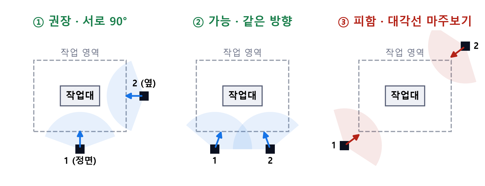
| 항목 | 기준 |
|---|---|
| 배치 | 작업 영역 바깥, 서로 90°(정면 + 옆) 또는 같은 쪽에서 같은 방향. 대각선 마주보기는 가능하면 피함 |
| 높이 · 각도 | 최소 0.5m, 가능하면 2m 이상. 두 대 모두 25~35° 숙여 작업 영역 가운데를 향하게 |
| 거리 | Sense와 각 베이스스테이션 사이 0.5~7m |
| 작업 영역 | 최소 2×1.5m, 최대 5×5m |
| 고정 | 벽 고정 권장. 어려우면 흔들리지 않는 삼각대 · 책상 |
- 두기위 기준대로 삼각대에 고정하고(그림 2), 앞면 보호필름을 뗍니다.
- 전원전원을 연결합니다.
- 채널채널을 서로 다르게 맞춥니다(처음 한 번). 뒷면 작은 구멍(그림 3)을 뾰족한 물건으로 누를 때마다 채널이 1씩 오르고(0~15) 초록 LED가 한 번 깜빡입니다.
- 각도 조이기삼각대 손잡이를 단단히 조여 움직이지 않게 합니다.
두 대 모두 LED가 초록색으로 계속 켜져 있습니다.
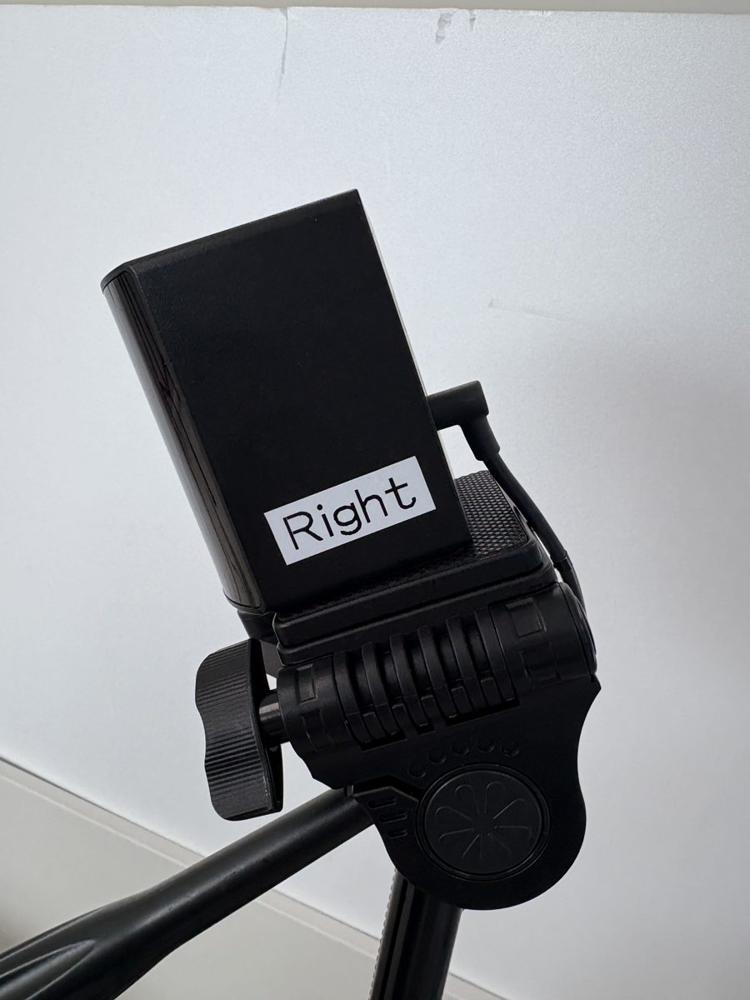
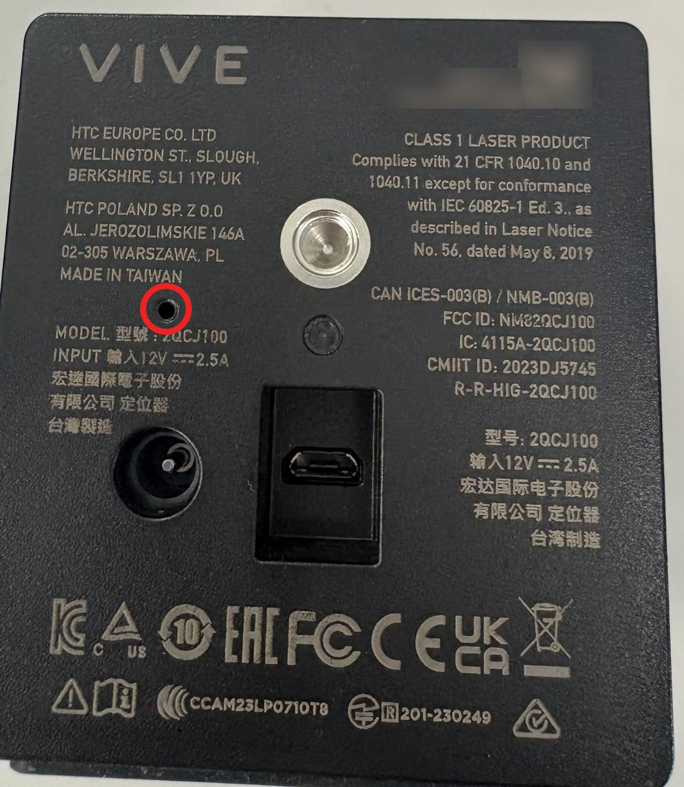
햇빛이 드는 곳, 너무 강한 조명 · 작업 영역 안의 유리 · 아크릴 반사면 · 앞면을 가리는 물건 · 흔들리는 거치. 설치 후에는 건드리지 않습니다. 움직이면 캘리브레이션(4.1)을 다시 해야 합니다.
Pika Pro 제품: Station Pro
이 부분은 Pika Pro 제품에만 해당합니다. Pika Pro에는 Station Pro가 들어 있고, 배터리를 끼워서 씁니다(그림 4). 배터리 앞면의 LED 4칸이 남은 양이고, 오른쪽이 전원 버튼입니다.
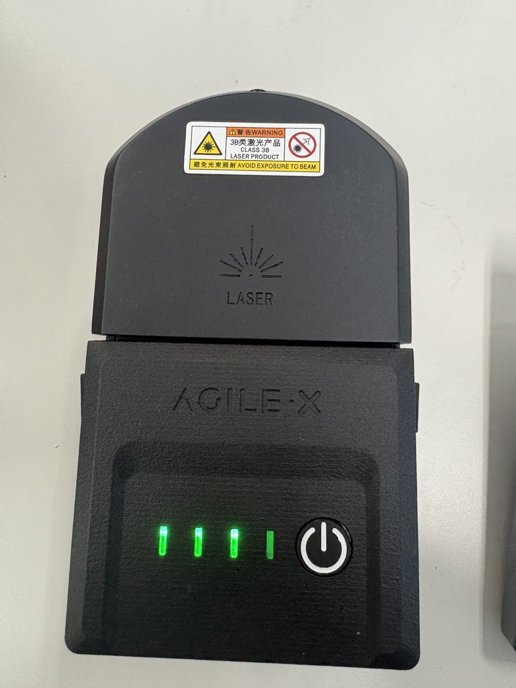
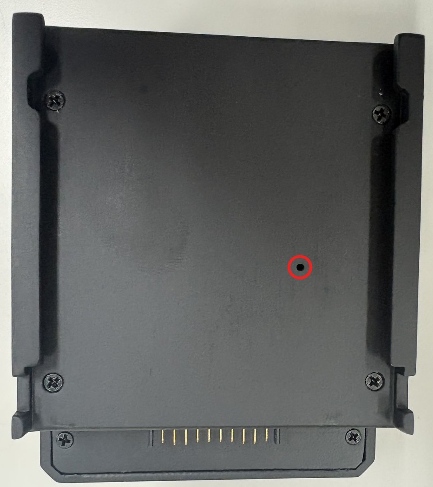
채널 구멍: Station Pro는 채널을 바꾸는 작은 구멍이 뒷면에 있습니다(그림 5, 빨간 원). 3.1 ③처럼 채널을 서로 다르게 맞춥니다.
윗면 레이저: 윗면을 터치하면 십자 모양 레이저가 나옵니다. 레이저 빛을 눈에 보이게 해서 Station Pro가 어느 방향, 어느 위치를 가리키는지 확인하는 기능입니다. 설치할 때 십자가 작업 영역 가운데에 오는지 보면 각도를 맞추기 쉽습니다.
Class 3B 레이저입니다. 레이저가 나오는 동안 빛을 직접 보거나 사람 얼굴 쪽으로 향하게 하지 않습니다.
3.2 장비 연결
Sense, 트래커, Gripper를 연결하고 노트북이 제대로 알아보는지 확인합니다.
① Sense
Type-C 케이블로 노트북 USB 3.0 포트에 꽂습니다. Sense 오른쪽 Type-C 두 개 중 아래쪽이 노트북 케이블, 위쪽은 트래커 유선 연결용입니다(그림 12). 아래쪽 케이블을 빼면 Sense 전체가 노트북에서 끊깁니다.
② HTC 바이브 트래커
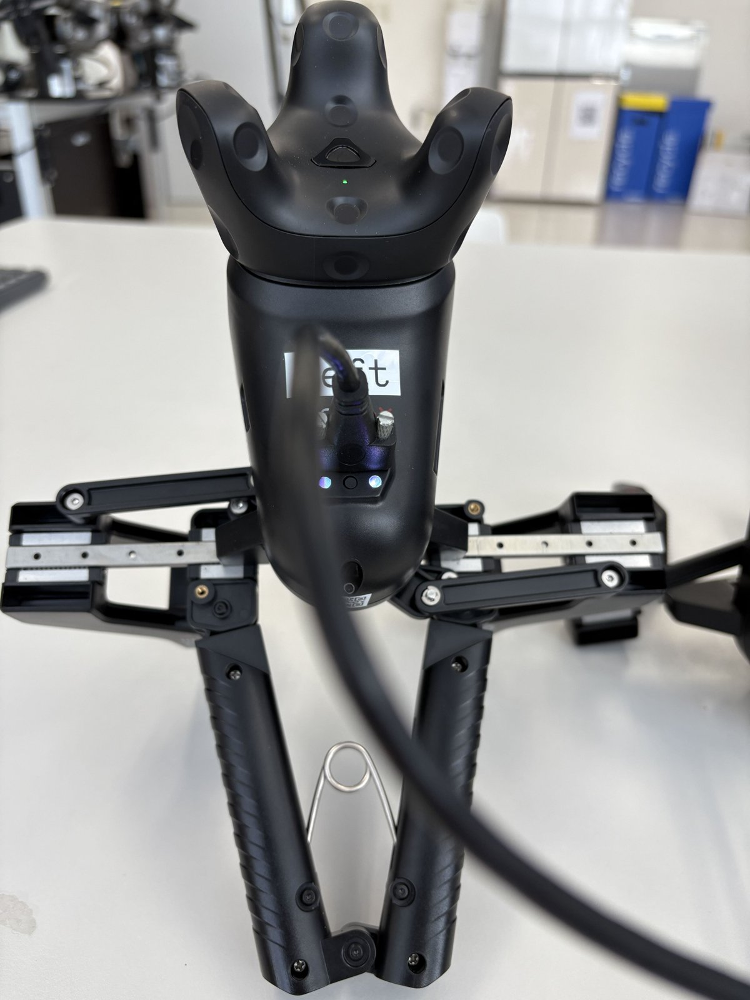
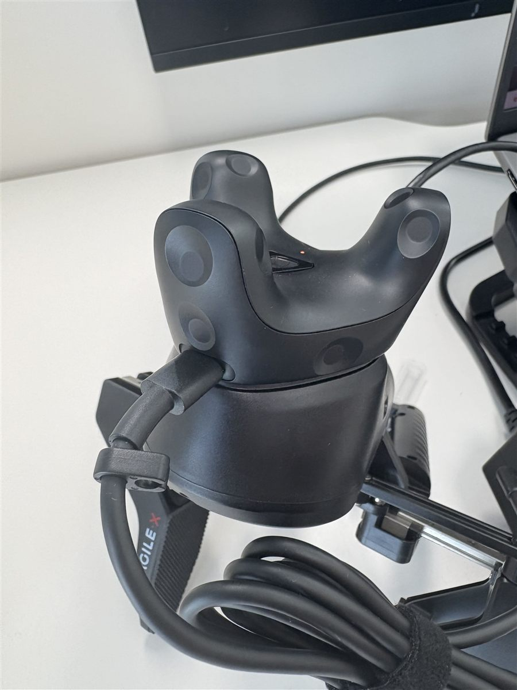
- 동글 꽂기무선 동글을 노트북 USB 포트에 꽂습니다.
- 트래커 켜기버튼을 LED가 켜질 때까지 1~2초 누르고 바로 뗍니다. 파랑 → 초록이 되면 동글과 연결된 것입니다.
끄기: 길게 눌러 파랑이 깜빡이면, 다시 길게 누릅니다. 트래커와 Sense를 잇는 짧은 케이블(그림 12)은 바인딩(5.2) 때만 필요합니다.
트래커가 꺼져 있으면 다른 데이터는 다 나오는데 위치만 안 나옵니다. 프로그램이 실행 중일 때 트래커를 껐다 켰다면 프로그램을 다시 실행해야 위치가 돌아옵니다.
트래커 충전
충전 단자는 트래커 바로 아래, Sense 본체와 맞닿는 곳에 있습니다(그림 7). Sense 옆면 Type-C 단자로는 충전되지 않습니다. 휴대폰용 Type-C 충전기로 충전합니다. 빨간불이면 30분쯤 충전한 뒤 쓰고, 불이 아예 안 켜지면 문의합니다.
| 트래커 LED | 뜻 |
|---|---|
| 빨강 깜빡임 | 배터리 10% 미만 → 충전 |
| 노랑 켜짐 | 충전 중 |
| 흰색 켜짐 | 완충 |
| 초록 켜짐 | 무선 동글과 연결됨 (사용 상태) |
| 파랑 켜짐 / 깜빡임 | 연결 중 / 페어링 중 |
③ Gripper
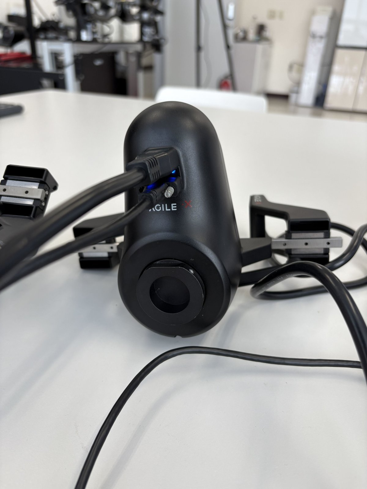
- 전원: XT30 단자에 24V / 2A. 파워서플라이면 +를 2번 핀, −를 1번 핀에. 극성을 꼭 확인합니다.
- 통신: Type-C로 노트북의 다른 USB 3.0 포트에.
- USB만 꽂으면 카메라는 나오지만 집게는 안 움직입니다. 모터는 24V로만 돕니다.
- 집게가 열리고 닫힐 공간이 있는 곳에 둡니다.
| Gripper LED | 뜻 |
|---|---|
| 초록 깜빡임 | 자가 점검 중 |
| 초록 켜짐 | 대기 (집게 비활성) |
| 파랑 켜짐 | 동작 중 (6.1 실행 시) |
| 빨강 켜짐 | 모터 이상 |
④ 연결 확인
lsusb rs-enumerate-devices -s lsusb -t | grep "Video.*5000M"
lsusb에8086:0b5b(D405),1bcf:2cd1(어안 카메라),1a86:7522(그립 센서)가 꽂은 대수만큼(Sense + Gripper면 각 2줄),28de:2101 Watchman Dongle1줄rs-enumerate-devices -s에Intel RealSense D405가 꽂은 대수만큼- 마지막 명령에 줄이 나옴 = USB 3.0 연결. 아무것도 없으면 USB 2.0 포트이니 옮깁니다
꽂은 직후에는 failed to set power state가 한 번 나올 수 있습니다. 5초 뒤 다시 실행하면 정상입니다.
캘리브레이션
베이스스테이션 두 대의 위치를 노트북에 알려 주는 작업입니다. 베이스스테이션을 새로 설치하거나 옮겼으면 꼭 합니다. 실패해도 에러가 나오지 않으니, 아래 기준으로 직접 판정합니다.
4.1 캘리브레이션
- 준비Sense 단독 실행(5.1) · Sense + Gripper 실행(6.1)과 텔레오퍼레이션(9장) 프로그램이 켜져 있으면 끕니다(동글을 같이 쓰기 때문). 트래커를 켜고 Sense를 작업 영역 가운데에 내려놓습니다. 움직이지 않습니다. 베이스스테이션 LED 2개, 트래커 LED가 모두 초록인지 봅니다. 트래커가 빨갛게 깜빡이면 먼저 충전합니다(3.2).
- 실행
cd ~/pika_ros/install/pika_locator/lib ./survive-cli --force-calibrate
- 판정하고 바로 끄기아래 성공 기준이 보이면 더 기다리지 말고 Ctrl + C로 끕니다. 프로그램은 저절로 끝나지 않고 같은 줄을 계속 출력합니다. 끌 때 나오는 빨간
Libusb poll failed. -10은 무시합니다.
Global solve ... for 0과for 1이 둘 다 나온다- 두 줄의
acc err가 모두 0.005 미만이다 (5mm)
Got OOTX packet 줄은 기다리지 않아도 됩니다. 안 나오거나 늦게 나와도 위 두 가지가 맞으면 성공입니다.
성공 화면
Global solve ... for 0 ... (acc err 0.0007)
Global solve ... for 1 ... (acc err 0.0002)
Using LH 0 (67d7c3b3) as reference lighthouse
(여기서 Ctrl + C)실패 화면
OOTX not set for LH in channel 3; ...
OOTX not set for LH in channel 1; ...
Global solve ... for 1 ... (acc err 0.0005)
Using LH 1 (c0bcdf1c) as reference lighthouse
(여기서 멈추고 몇 분이 지나도 그대로)
for 1 하나뿐이고 for 0이 안 나옴.
- Ctrl + C로 끕니다.
- 트래커 LED를 봅니다. 빨강이면 충전합니다. 트래커 배터리가 부족하면 베이스스테이션 한 대만 계산되고 멈출 수 있습니다.
- 베이스스테이션 두 대 모두 각도를 작업 영역 가운데로 다시 맞춥니다(한 대만 돌리면 같이 보는 영역이 좁아질 수 있음).
- 보호필름 · 가림 · LED를 확인하고 ②부터 다시 합니다.
언제 다시 하나요
| 상황 | 명령 |
|---|---|
| 새로 설치, 베이스스테이션 추가 · 제거, 채널 변경 | ./ |
| 사용 중 위치가 틀어지거나 베이스스테이션이 살짝 움직였을 때 | ./ |
결과는 ~/에 저장됩니다. 베이스스테이션을 그대로 두면 다시 할 필요 없습니다.
진행 없이 멈추기만 하면 이 파일을 지우고(rm ~/) 다시 합니다.
Sense 확인과 바인딩
Sense만 켜서 위치 · 손잡이 · 카메라가 잘 나오는지 보고(5.1), Sense와 Gripper를 노트북이 구분하도록 USB 포트를 고정합니다(5.2). 둘 다 노트북당 한 번입니다.
5.1 Sense 단독 실행
바인딩(5.2)을 하기 전에만 합니다. 바인딩을 이미 했다면 건너뜁니다. 이 스크립트가 바인딩 설정을 덮어쓰기 때문입니다(복구 방법은 바인딩(5.2)의 "바인딩 후 지킬 것").
- Gripper USB 케이블 뽑기노트북에서 Gripper의 Type-C(USB) 케이블을 뽑습니다. 24V 전원선만 뽑으면 안 됩니다. Sense는 꽂아 둡니다.
Sense와 Gripper는 노트북에서 같은 종류의 장치로 보여서, Gripper가 꽂혀 있으면 Gripper 값을 Sense 값으로 읽습니다. 확인:
lsusb | grep -c 1a86:7522
1이 나오면 Sense만 꽂힌 것입니다.2면 Gripper USB가 아직 꽂혀 있습니다. - 트래커 켜기트래커 LED가 초록인지 봅니다(3.2 ②).
- 실행 (탭 1, 확인이 끝날 때까지 켜 둠)
cd ~/pika_ros/scripts bash start_single_sensor.bash
비밀번호를 입력하면 잠시 뒤 RViz 창이 뜹니다. 이 탭과 RViz 창은 닫지 않습니다.
- RViz 화면 맞추기처음엔 회색만 보입니다 → 오른쪽 Views 패널의 Zero 클릭 → 휠로 확대(마우스가 없으면 터치패드 두 손가락 쓸기,
또는 Views의 Distance를 1.5 정도로 입력).
base_와link LHR-로 시작하는 트래커 좌표축이 보입니다.
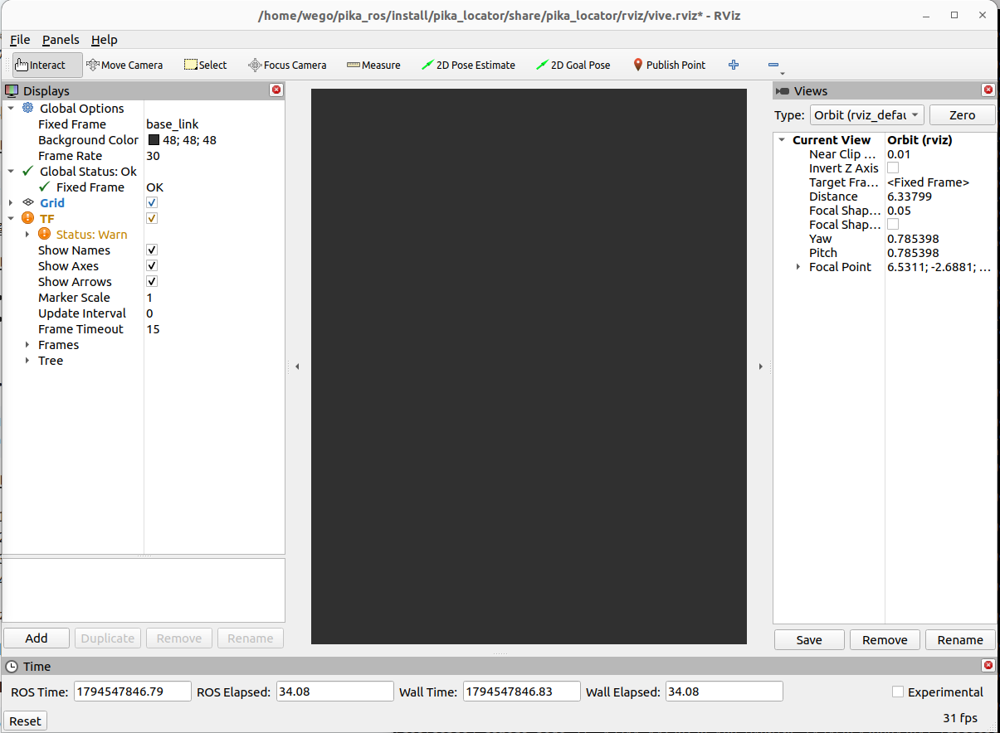
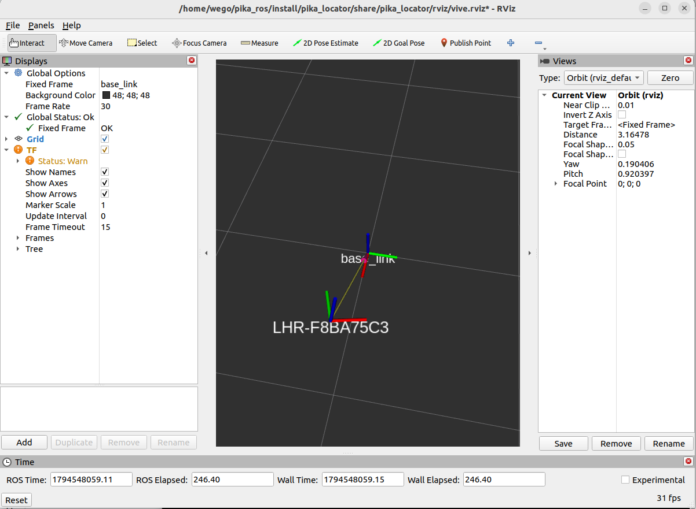
- 왼쪽 Global Status가 초록 Ok (TF의 노란 Warn은 정상일 때도 떠 있음)
- Sense를 앞뒤 · 좌우 · 위아래로 움직이면
LHR-좌표축이 같이 따라옴 - 내려놓으면 떨리지 않고 멈춤, 작업 영역 끝까지 가져가도 끊기거나 튀지 않음
움직이는 동안 The data fluctuates too much 경고가 나올 수 있습니다. 내려놓으면 멈추면 정상입니다. 가만히 둬도 계속 나오면 캘리브레이션(4.1)을 다시 합니다.
RViz의 앞뒤 · 좌우는 캘리브레이션할 때마다 달라집니다. 화면 방향은 신경 쓰지 않아도 됩니다. 내려놓으면 멈추고, 들면 위(파란 화살표 Z)로 가고, 옮긴 만큼 움직이면(격자 한 칸 = 1m) 정상입니다.
데이터 확인 (탭 2: Ctrl + Shift + T)
아래 명령은 장치를 켜는 명령이 아니라, 탭 1에서 이미 나오고 있는 값을 들여다보는 명령입니다. 한 상자씩 실행하고 확인한 뒤 Ctrl + C로 끄고 다음 상자로 넘어갑니다. 탭 1은 끄지 않습니다.
- 위치
ros2 topic echo /pika_pose
Sense를 움직이면
position의x·y·z(m) 값이 크게 바뀝니다. 가만히 둬도 소수점 아래 넷째 자리쯤이 조금씩 바뀌는 것은 정상입니다(0.1mm 수준의 흔들림). - 손잡이
ros2 topic echo /gripper/data
항목 손잡이를 놓았을 때 꽉 쥐었을 때 angle1.67 근처 0 쪽으로 줄어듦 distance0.097 근처 (집게 벌어진 폭, m) 0 쪽으로 줄어듦 나머지 항목(
effort등)은 0이어도 정상입니다. 두 값이 계속0.0이면 Gripper USB가 꽂혀 있는 것입니다(①). - 카메라 화면
ros2 run rqt_image_view rqt_image_view /camera_fisheye/color/image_raw
창이 뜨면서 Sense 어안 카메라 화면이 바로 나옵니다(그림 11). 카메라 앞을 손으로 가려 화면이 바뀌면 성공. 창을 닫고 다음으로 넘어갑니다.
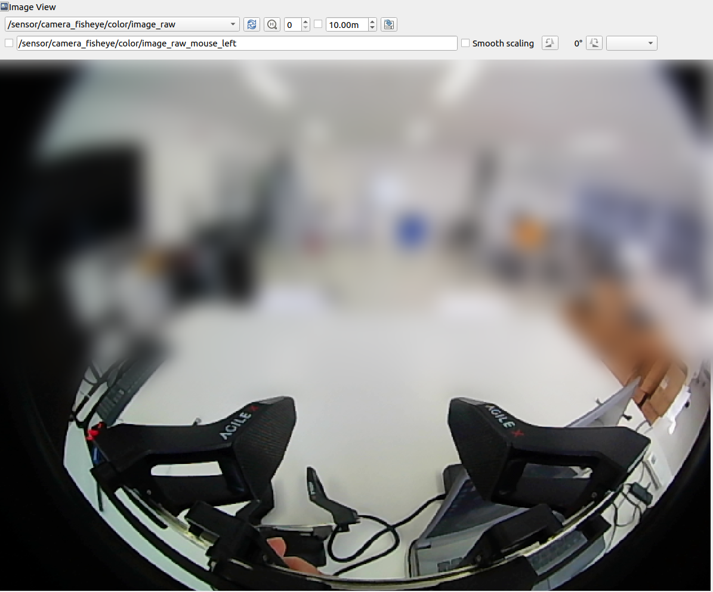
| 토픽 | 내용 |
|---|---|
/ | Sense 위치 · 자세 |
/ | 손잡이를 쥔 정도(각도 · 폭) |
/ | 손잡이 조인트 값 |
/ | 어안 카메라 |
/ | D405 뎁스 카메라 |
끄기 · 탭 2 → 탭 1 순서로 Ctrl + C를 누르고 $가 보일 때까지 기다립니다. RViz 창도 같이 닫힙니다. 다음으로 넘어가기 전에 꼭 끕니다. 켜 둔 채 다시 실행하면 두 벌이 같이 돌아 값이 이상해집니다.
5.2 바인딩
Sense와 Gripper는 노트북 입장에서 똑같이 생긴 장치라 구분을 못 합니다. "이 USB 포트는 Sense, 저 포트는 Gripper"로 고정해 주는 작업입니다. 포트 위치로 구분하기 때문에, 바인딩 뒤에는 포트를 바꾸면 안 됩니다. 노트북당 한 번 해 둡니다.
- 준비실행 중인 Pika 프로그램을 모두 끕니다(5.1 끄기). Gripper에 24V 전원을 연결합니다.
- 포트 정하기USB 3.0 포트 두 개를 정하고 마스킹테이프로 SENSE, GRIPPER라고 붙입니다.
- 트래커를 케이블로 연결짧은 Type-C 케이블로 트래커와 Sense 오른쪽 Type-C 두 개 중 위쪽을 잇습니다(그림 12). 바인딩 도구가 트래커 고유 번호를 이 케이블로 읽습니다. 무선 동글만으로는 읽지 못해 진행이 멈춥니다. 확인:
lsusb | grep 28de:2300
Valve Software LHR한 줄이 나오면 연결된 것입니다. 아무것도 안 나오면 케이블 양쪽을 다시 꽂고 트래커가 켜져 있는지 봅니다.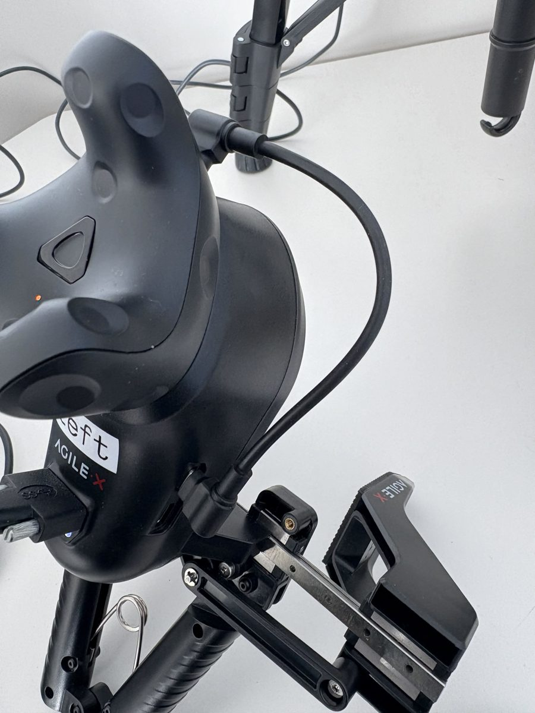
그림 12. 트래커와 Sense 오른쪽 위 Type-C를 잇는 케이블 (바인딩 때만 필요) - Sense만 꽂기Sense를 SENSE 포트에 꽂고, Gripper USB는 뽑아 둡니다(24V 전원선은 그대로).
- 실행
cd ~/pika_ros/scripts sudo -v python3 setup_device.py
바인딩 도구 화면 따라 하기
모든 안내가 중국어 한 줄 + 영어 한 줄로 두 번 나옵니다. 중국어 줄은 무시하고 영어 줄만 봅니다. 장치를 꽂거나 뽑을 때마다 5초 기다린 뒤 Enter를 누릅니다.
- 종류 고르기 →
3입력 후 EnterPlease select binding 1. Two pika sensors (handheld grippers) 2. Two pika grippers (mounted on robot arm) 3. One pika sensor and one pika gripper 4. One pika helmet 5. Two pika sensors and one helmet with tracker Enter:
뜻: 1 Sense 2대 / 2 Gripper 2대 / 3 Sense 1대 + Gripper 1대 / 4 헬멧 / 5 Sense 2대 + 헬멧.
- Sense 읽기 → 그대로 Enter
Please plug in the sensor device, then press Enter to continue...
뜻: Sense를 꽂고 Enter. 이미 꽂혀 있으니 Enter만 누릅니다. 아래처럼 맨 끝에
LHR-로 시작하는 트래커 번호가 나와야 정상입니다.sensor device info: 4191XXXXXXXX 1-8.4:1.0 1-8.1:1.0 LHR-XXXXXXXX
- Sense 뽑고 Gripper 꽂기 → 5초 뒤 Enter
Please unplug the sensor device and plug in the gripper device (do not use the same USB port; the USB port must not change after setup), then press Enter to continue...
뜻: Sense를 뽑고 Gripper를 다른 포트에 꽂음. Sense USB를 SENSE 포트에서 뽑고(트래커 케이블은 그대로), Gripper USB를 GRIPPER 포트에 꽂습니다. 아래가 나오면 정상입니다. Gripper는 트래커가 없어서 끝이
None입니다.gripper device info: 2303XXXXXXXX 1-4.4:1.0 1-4.3:1.0 None Generating configuration files... Updated /home/(사용자)/.bashrc Setup complete! The following files were generated: 1. setup_sensor_gripper.bash 2. start_sensor_gripper.bash Running setup_sensor_gripper.bash Done.
- 둘 다 다시 꽂기 → 5초 뒤 Enter
Please unplug and replug the device into the same USB port used during binding. Then press Enter to verify the binding...
뜻: 바인딩한 포트에 장치를 다시 꽂고 Enter. Sense와 Gripper 둘 다 꽂혀 있어야 합니다.
- Gripper USB를 GRIPPER 포트에서 뽑았다가 다시 꽂습니다.
- Sense USB를 SENSE 포트에 꽂습니다. 앞에서 뽑아 둔 상태라 이걸 빠뜨리기 쉽습니다.
- 완료
Please wait... Binding successful. To start the device: 2. Then run: bash start_sensor_gripper.bash
Binding successful이 나오면 끝입니다. 안내 번호가 1 없이 2부터 나오는 것은 도구가 원래 그렇게 출력하는 것이라 정상입니다.
확인
ls -l /dev/ttyUSB50 /dev/ttyUSB60 /dev/video50 /dev/video60
네 줄 모두 -> 표시와 함께 나옵니다(50번대 = Sense, 60번대 = Gripper). 도구가 ~/에 트래커 번호(export pika_)를 넣었으니, Sense + Gripper 실행(6.1)은 새 터미널을 열어서 합니다.
- USB 포트를 바꾸지 않습니다. 허브를 새로 끼우는 것도 포트가 바뀌는 것입니다. 바뀌면 바인딩을 다시 합니다.
start_,single_ sensor.bash start_,single_ gripper.bash start_를 실행하지 않습니다(설정을 덮어씀). 실행했으면single_ sensor_ whit_ teleop.bash bash setup_후 다시 꽂습니다.sensor_ gripper.bash
중간에 막힐 때
| 화면 문구 (영어 줄) | 뜻 / 할 일 |
|---|---|
Unable to get localization tag serial number | 트래커를 케이블로 읽지 못함 → ③대로 트래커 케이블을 잇고 lsusb | grep 28de:2300로 확인한 뒤 Enter |
Cannot find sensor (left) fisheye camera | 마지막 확인 때 Sense가 안 꽂혀 있음 → Sense를 SENSE 포트에 꽂고 5초 뒤 Enter |
Cannot find gripper ... | Gripper가 안 꽂혀 있거나 다른 포트에 꽂음 → GRIPPER 포트에 꽂고 5초 뒤 Enter |
| 장치 정보를 못 읽는다는 문구가 반복 | 케이블을 다시 꽂고 5초 뒤 Enter. 계속 반복되면 화면 문구를 복사해 문의 |
| USB 시리얼 장치를 하나만 꽂으라는 문구 | Sense와 Gripper가 같이 꽂혀 있음 → 그때 필요한 장치 하나만 남기고 Enter |
Sense + Gripper 실행과 철수
Sense 손잡이를 쥐는 만큼 Gripper 집게가 따라 닫힙니다. 바인딩한 뒤로는 3~4장을 마친 다음 Sense + Gripper 실행(6.1)부터 합니다.
6.1 Sense + Gripper 실행
- 준비 확인
- Sense USB는 SENSE 포트, Gripper USB는 GRIPPER 포트에 꽂혀 있음 (바인딩 때와 같은 포트)
- Gripper 24V 전원 연결됨
- 트래커 LED 초록. 트래커 케이블(그림 12)은 빼도 되지만, 뺄 거면 실행 전에 뺍니다. 실행 중에 빼면 위치가 끊깁니다
ls -l /dev/ttyUSB50 /dev/ttyUSB60
두 줄 모두
->와 함께 나오면 됩니다.그런 파일이나 디렉터리가 없습니다가 나오면 그 장치가 안 꽂혔거나 포트가 바뀐 것입니다. - 실행 (탭 1, 작업하는 동안 켜 둠)
cd ~/pika_ros/scripts bash start_sensor_gripper.bash
바인딩(5.2) 직후라면 새 터미널(Ctrl + Alt + T)에서 실행합니다. RViz 창이 뜹니다. 이 탭과 RViz는 닫지 않습니다.
- 판정
성공
- RViz가 뜨고(회색이면 Zero), 왼쪽 Global Status가 Ok
- Sense 손잡이를 천천히 쥐었다 펴면 Gripper 집게가 따라 닫혔다 열림, Gripper LED 파랑
- 탭 1 화면에
process has died라는 줄이 없음
탭 1에 빨간 글자로
[ERROR] … process has died …로 시작하는 줄이 보이면 프로그램 하나가 멈춘 것입니다. Ctrl + C로 끄고 7장 문제 해결을 봅니다.
집게가 움직이는 동안에는 손가락을 집게 사이에 넣지 않습니다.
RViz에는 Sense 위치만 나옵니다(트래커는 Sense에만 있음). Gripper를 들고 움직여도 RViz가 안 변하는 건 정상입니다.
집게가 안 움직이면
- 24V 전원선을 뽑았다 다시 꽂기Gripper의 24V 전원선(XT30)을 뽑고 5초 뒤 다시 꽂습니다. 프로그램은 끄지 않아도 됩니다. 대부분 이것으로 따라 움직입니다.
- 그래도 안 되면 상태 보기 (탭 2)
ros2 topic echo /gripper/gripper/data --once
voltage: 0.0→ 24V 전원이 안 들어감. 어댑터와 콘센트를 확인하고, 연결한 뒤 탭 1을 Ctrl + C 후 다시 실행. 정상이면 24 근처- 전압은 정상인데
enable: false→ ①을 한 번 더. 그래도 안 되면error값과 LED 색을 적어 문의
Gripper 카메라 확인 (탭 2)
탭 1이 실행 중이고 RViz가 떠 있는 상태에서 합니다. 탭 1을 끄면 화면이 안 나옵니다.
ros2 run rqt_image_view rqt_image_view /gripper/camera_fisheye/color/image_raw
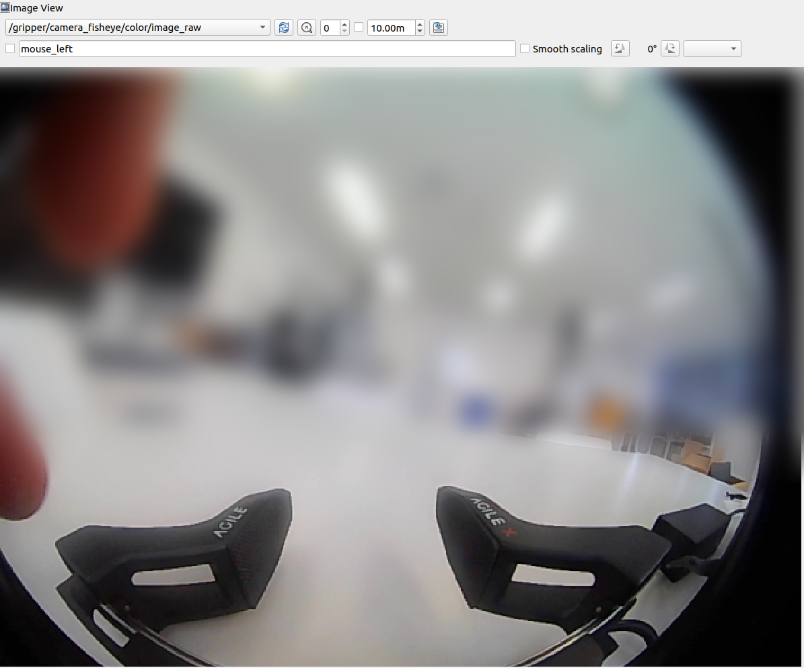
창이 뜨면서 Gripper 어안 카메라 화면이 바로 나옵니다. Gripper 카메라를 손으로 가려 화면이 가려지고, 화면 아래쪽에 집게가 보이면 맞습니다.
이 모드에서는 Gripper 카메라만 켜지고 Sense 카메라는 켜지지 않습니다. Sense 카메라는 Sense 단독 실행(5.1)에서 확인합니다.
| 토픽 | 내용 |
|---|---|
/, / | Sense 손잡이 값 |
/ | Gripper 상태 (enable, voltage 포함) |
/ | Sense 위치 |
/ | Gripper 어안 |
/ | Gripper D405 |
이 모드에서는 토픽 앞에 /, /가 붙습니다.
6.2 종료와 철수
- 프로그램 끄기탭 2 → 탭 1 순서로 Ctrl + C. 프롬프트(
$)가 돌아올 때까지 기다립니다. - Gripper 전원Gripper 24V 전원을 뺍니다.
- USBUSB 케이블을 뺍니다.
- 트래커트래커 전원을 끄고, 다음에 쓸 수 있게 충전해 둡니다(LED 흰색 = 완충).
- 베이스스테이션전원을 빼고 철거합니다. 삼각대 배터리를 썼으면 충전해 둡니다.
문제 해결
Pika 설치 · 운용(2~6장)에서 자주 생기는 문제입니다. 텔레오퍼레이션 문제는 10장에 있습니다. 원인을 모르겠으면 터미널을 모두 닫고, USB를 모두 뺐다 다시 꽂은 뒤 장비 연결(3.2)부터 다시 합니다.
설치 (2장)
| 증상 | 해결 |
|---|---|
| 어디가 잘못됐는지 모르겠음 | bash ~/ (2장 끝 설치 점검) |
Could not get lock / | 자동 업데이트 중 → 5분 뒤 다시 |
E: gcc-13 패키지를 찾을 수 없습니다 | gcc-13 저장소가 추가되지 않음 → 필요한 패키지와 장치 권한(2.4) ② |
colcon build에서 Failed <<< librealsense2 | librealsense가 ~/ 안에 풀림 → 빌드와 설치 확인(2.5) "안 될 때" |
RealSense 라이브러리 설치(2.3) cmake에서 No internet connection, disabling IMPORT_ | 무시해도 됨 (2.3 ①) |
터미널을 열 때마다 .../ | ~/를 지웠거나 옮김 → sed -i '/로 그 줄을 지우거나, Pika 소프트웨어 받기(2.2)부터 다시 설치 |
Package 'sensor_ | source ~/ |
driver_ 에러 | sudo apt install -y libopenvr-dev |
Pika 운용 (3~6장)
| 증상 | 해결 |
|---|---|
No such file or directory | cd ~/ 후 다시, ls로 파일 이름 확인 |
캘리브레이션에서 for 1(또는 for 0) 하나만 나오고 멈춤 | 트래커 LED 확인(빨강이면 충전) → 베이스스테이션 두 대 각도 재조정 → 캘리브레이션(4.1) 다시 |
| 캘리브레이션 중 터미널이 아무 진행 없이 멈춤 | rm ~/ 후 캘리브레이션(4.1) 다시 |
RViz가 빨간 Error, /가 안 나옴 | 트래커 전원이 꺼졌거나 실행 중 껐다 켬 → 트래커 켜고(초록) → Ctrl + C → 다시 실행 |
Not entirely sure what this data is 경고 | 트래커 전원이 꺼졌거나 연결이 안 됨 → 트래커 LED 확인, 빨강이면 약 30분 충전 |
RViz에서 트래커 좌표축이 base_ 없이 한곳에 모여 있음 | 캘리브레이션(4.1)을 안 했거나, 바인딩 후 새 터미널을 안 엶 → 새 터미널에서 다시 실행 |
| 트래커 LED가 빨갛게 깜빡임 | 배터리 10% 미만 → 트래커 바로 아래 충전 단자로 충전(노랑 = 충전 중, 흰색 = 완충) |
| 트래커 LED가 파랗게 깜빡임 | 길게 눌러 끈 뒤 1~2초 눌러 다시 켬 |
process has died (앞에 Device disconnect) | 트래커 연결이 끊김. 실행 중에 트래커 케이블을 뺐으면 그대로 두고 다시 실행. 아니면 트래커 배터리 확인 → Ctrl + C → 다시 실행 |
The device has been disconnected! | Sense 케이블 접촉 문제 → 양쪽 끝까지 다시 꽂기 → 반복되면 케이블 교체. 케이블이 당겨지지 않게 여유를 둠 |
rs-enumerate-devices -s에 아무것도 없음 | 다시 꽂고 5초 뒤 확인, 다른 USB 3.0 포트도 시도 |
좌표축이 튀거나 흘러감, The data fluctuates too much가 계속 나옴 | 햇빛 · 반사물 · 다른 적외선 장치 제거, 베이스스테이션 흔들림 확인 → 캘리브레이션(4.1) 다시 |
Sense 단독 실행(5.1)에서 /가 계속 0.0 | Gripper USB가 꽂혀 있음 → 탭 1 Ctrl + C → Gripper USB 뽑고 다시 실행 |
| rqt 창이 떴는데 화면이 안 나옴 | 탭 1이 꺼져 있음 → 탭 1을 먼저 실행. 명령 끝에 토픽 이름을 붙여 실행(5.1 · 6.1) |
바인딩 중 Unable to get localization tag serial number | 트래커 케이블이 안 이어짐 → 바인딩(5.2) ③ |
바인딩 마지막에 Cannot find sensor (left) fisheye camera | Sense가 안 꽂혀 있음 → SENSE 포트에 꽂고 Enter (5.2 ④) |
| Sense + Gripper 실행(6.1)에서 집게가 안 움직임 | 24V 전원선을 뽑았다 5초 뒤 다시 꽂기 → 그래도 안 되면 Sense + Gripper 실행(6.1) "집게가 안 움직이면" |
Sense · Gripper 카메라가 뒤바뀜, / 없음 | 바인딩이 깨짐 → cd ~/ 후 다시 꽂기. 포트를 바꿨으면 바인딩(5.2) 다시 |
| 어안 카메라 화면이 끊김 | USB를 다시 꽂고 다시 실행. 계속되면 문의 |
| Ctrl + C로 안 꺼짐 | 10초 뒤 한 번 더, 안 되면 터미널 창 닫기 |
에러 문구를 사진 대신 텍스트로 복사해서(Ctrl + Shift + C) 보내고, 어느 부분에서 어떤 명령을 입력했는지와 lsusb, bash ~/ 결과를 같이 보냅니다.
참고 문서
| Pika 제품 매뉴얼 | AgileX Pika Product User Manual agilexsupport.yuque.com/staff-hso6mo/peoot3/mes7v5e0n0lsiipz |
| 베이스스테이션 | Base Station and Pika Configuration agilexsupport.yuque.com/staff-hso6mo/gp5vq8/esn6pubvk3miwoth |
| Gripper | Pika Gripper User Manual agilexsupport.yuque.com/staff-hso6mo/gp5vq8/iusmvf30a6nynngh |
| 소프트웨어 | pika_ros (ros2 브랜치) github.com/agilexrobotics/pika_ros/tree/ros2 |
| Pika Pro 영상 | Pika Pro Unboxing & Quick Start (AgileX, Pika Pro 제품) youtube.com/watch?v=JH32d45zg2E |
Pika→PiPER 텔레오퍼레이션 구조
Sense의 위치가 PiPER 관절 명령이 되기까지 위치 노드, teleop 노드 두 개, 컨트롤러, SDK 드라이버를 거칩니다. 문제가 생기면 이 흐름에서 어디가 멈췄는지 확인합니다.
데이터 흐름
move_js 경로입니다.구성 요소별 역할
/pika_pose 발행
install.zip의 바이너리로만 제공됩니다. 런치 파일에 dist_limit 0.2 , angle_limit 0.2 , linear_limit 5.0 , angular_limit 20.0 파라미터가 있고
설명은 "pose filtering"입니다. 바이너리에 "The data fluctuates too much. Check the positioning base station and locator and recalibrate them." 경고 문자열이 있습니다./pika_pose 최신값을 control_rate_hz 기본 30 Hz 타이머로 샘플링해 목표 포즈를 /delta_pose 로 발행합니다./delta_pose 를 받는 즉시 IK를 풀어 /control/joint_states 로 발행합니다. 평활화는 IK 비용의 w_smooth 뿐입니다. 관절 위치 경계는 있으나 속도 제한은 없습니다.agx_arm_ctrl_single_node.py
control/joint_states 를 받을 때마다 fast_mode 가 true면 agx_arm.move_js() , false면 move_j() 를 호출합니다. 이 경로에 보간이나 속도 제한 코드는 없습니다
(속도는 시작 시 speed_percent 로만 설정할 수 있고, 기본값은 미설정입니다. 관절 속도 한계를 읽어 쓰는 코드는 CPV 경로에만 있습니다). 피드백(feedback/joint_states 등)은 pub_rate 기본 200 Hz로 발행합니다.piper 드라이버
move_js 의 설명: "No smoothing. No trajectory planning. ... may cause severe mechanical shock, oscillation, or instability. Risk level: EXTREMELY HIGH."agx_arm_ros README는 fast_를 "켜면 /가 내부적으로 평활화와 보간이 없는 move_ 관절 제어 인터페이스를 쓴다"고 설명하고, 기본값은 false입니다.
그런데 teleop_, teleop_와 piper_x, nero용 런치까지 모두 "fast_를 지정합니다.
따라서 IK가 낸 30 Hz 관절 목표가 평활화와 속도 제한 없이 곧바로 모터 명령으로 갑니다. 센서 값이 튀면 팔이 그대로 따라 움직이므로, 시작은 천천히 하십시오.
파일
| 파일 | 역할 |
|---|---|
PikaAnyArm/ | 목표 포즈 생성. control_가 30 Hz로 돌며 /를 발행합니다. |
…/ | IK. /를 받아 / 발행 |
…/ | agx_arm_ctrl(CAN can0, fast_ true, 그리퍼 agx_, TCP 오프셋 0.13 m)과 위 두 노드를 띄웁니다. pub_에 handle_을 줍니다. |
…/ | IK 가중치와 입출력 토픽 |
agx_ | 컨트롤러. fast_, speed_(기본 0, 미설정), pub_ 파라미터 |
pika_ | Sense 손잡이 시리얼 노드. /, /, / 발행, / 서비스 호출, / 구독 |
목표 포즈는 이렇게 만들어집니다
- teleop 시작(트리거 서비스 호출) 시 손잡이 포즈의 역행렬
_를 저장하고, 팔 끝단의 기준 포즈start_ pose_ inv zero_(matrix /)와 곱해 기준 행렬을 만듭니다.feedback/ tcp_ pose - 이후 매 타이머 틱마다
result = (zero_를 계산해matrix × _ start_ pose_ inv) × handle_ matrix base_프레임의 목표 포즈로 발행합니다.link - 즉 시작 시 손잡이 자세가 팔 끝단 자세에 대응하고 이후 움직임만큼 팔이 이동합니다. 매뉴얼에서 두 번 쥐었다 펼 때 자세를 맞추라고 하는 이유입니다.
handle_는matrix /콜백에서 갱신되고, 타이머는 최신값을 30 Hz로 샘플링합니다.pika_ pose
토픽
| 토픽 | 타입 | 내용 |
|---|---|---|
/ | PoseStamped | Sense 위치·자세. 양손은 /, / |
/ | PoseStamped | IK 입력 목표 포즈 (base_) |
/ | PoseStamped | 팔 현재 끝단 포즈 (기준점 설정용) |
/ | JointState | 팔 현재 관절 (IK 연속성용) |
/ | JointState | IK 출력 관절 명령 (컨트롤러 입력) |
/ | PoseStamped | IK 해를 FK로 되돌린 끝단 포즈 (추종 오차 확인용) |
/ | JointState | 손잡이를 쥔 정도 값 (그리퍼 제어) |
/ | Trigger (서비스) | teleop 시작/정지 토글 |
IK 가중치 설정
| 파라미터 (piper.yaml) | 값 | 설명 (파일 주석) |
|---|---|---|
w_ | 0.1 | 직전 해와의 차이에 대한 페널티. 키우면 부드러워지지만 더 지연됩니다. 너무 크면 눈에 띄게 따라오지 못합니다. |
w_ | 2.0 | 위치 오차 가중치. 손맛이 약하면 올리고, 떨리면 낮춥니다. (코드 기본 20.0) |
w_ | 2.0 | 자세 오차 가중치 |
w_ | 0.01 | 중립 자세로 끌어당기는 정규화 |
ipopt_ / ipopt_ | 50 / 1e-4 | 실시간성 우선이면 허용 오차를 느슨하게 |
enable_ | false | 손맛 조정 중에는 끌 수 있으나, 실기 안전 시험에서는 켤 것을 권장합니다 (파일 주석). |
텔레오퍼레이션 준비와 실행
pika_ros 설치와 빌드, 베이스스테이션 배치와 캘리브레이션은 이 설명서 2~4장에서 끝낸 상태를 전제로 합니다. 이 장은 teleop에 필요한 준비(conda 환경 등)와 단일 PiPER + Sense 구성의 실행 순서를 정리한 것입니다. 이 장의 명령은 실제 로봇을 움직입니다. 처음에는 낮은 속도로 시험합니다.
준비물
- Ubuntu 22.04(x86_64) PC + ROS 2 Humble,
pika_설치·빌드 완료(2장)ros - Pika Sense + 트래커(충전), 무선 동글, 베이스스테이션 2대
- PiPER + 어댑터 전원 + CAN 케이블, USB-CAN 어댑터. PiPER 전원을 반드시 켭니다. 전원이 꺼져 있으면 CAN에 아무 신호도 없고 컨트롤러가 약 40초 뒤 종료합니다(10장).
- 그리퍼: PiPER 기본 그리퍼. Pika Gripper를 달 경우 24V 전원과 Type-C 케이블(PC 연결)과 USB 3.0 포트가 추가로 필요합니다(아래 "Pika Gripper를 쓸 때").
teleop 준비
- 필요한 패키지
sudo apt install -y ros-humble-xacro ethtool can-utils
ros-humble-xacro가 없으면 teleop 런치가No such file or directory: 'xacro'로 실패합니다. 로봇 모델을 변환하는 프로그램이 없다는 뜻이고 모델 파일 문제가 아닙니다.ethtool과can-utils는 CAN 활성화 스크립트(can_)가 요구합니다.activate.sh - conda 설치 (PC에 conda가 없을 때)
cd /tmp U=https://repo.anaconda.com/miniconda curl -fsSL -o miniconda.sh $U/Miniconda3-latest-Linux-x86_64.sh sha256sum miniconda.sh bash miniconda.sh -b -p $HOME/miniconda3
sha256sum으로 나온 값을https:/목록의/ repo.anaconda.com/ miniconda/ Miniconda3-latest-Linux-x86_행에 적힌 값과 비교합니다.64.sh -b는 확인 질문 없이 설치하고~/를 바꾸지 않습니다. conda가 이미 있는 PC는 이 과정을 건너뜁니다..bashrc - 터미널마다 conda 명령 쓰기
echo 'source ~/miniconda3/etc/profile.d/conda.sh' >> ~/.bashrc source ~/.bashrc
이 줄은
conda명령만 쓸 수 있게 하고, 환경(base,pika)은 자동으로 켜지 않습니다. - teleop용 conda 환경
pika만들기conda create -y -n pika --override-channels -c conda-forge \ python=3.10 pinocchio==3.2.0 casadi==3.6.7 conda activate pika pip install lark numpy==2.0.2 empy==3.3.4 meshcat pyyaml piper-sdk \ opencv-python ur-rtde netifaces catkin_pkg
패키지와 버전은 공식 매뉴얼 teleop 장의 목록입니다. 위
conda create는conda-forge채널만 쓰므로 Anaconda 기본 채널의 이용약관 동의 없이 만들어지고, 같은 버전(pinocchio 3.2.0,casadi 3.6.7,numpy 2.0.2)이 설치됩니다. - 환경 확인
conda activate pika python -c "import casadi, pinocchio, numpy as n; \ print(casadi.__version__, pinocchio.__version__, n.__version__)"
오류 없이
3.6.7 3.2.0 2.0.2가 나오면 됩니다.conda activate pika는 탭 2(teleop)에서만 하고, 탭 1(센서)은 conda를 끈 상태로 실행합니다.
실행 (단일 PiPER + Sense + 기본 그리퍼)
- PiPER 연결과 전원
첫 전원은 PiPER 사용 설명서의 순서를 지킵니다(J2 → CAN 케이블 → XT30 → 항공 커넥터 빨간 점 아래로 → 어댑터 → 패널 녹색 점멸 확인 → USB). 어댑터 전원 케이블을 꽂고 전원을 켜는 것을 빠뜨리지 않습니다.
- CAN 활성화
cd ~/pika_ros/src/PikaAnyArm/agx_arm/agx_arm_ros/scripts bash can_activate.sh ip -br link | grep can # can0 UP 확인 candump can0 # 줄이 계속 올라오면 정상 (Ctrl+C)
ethtool과can-utils가 없으면 이 스크립트가 설치하라는 안내를 하고 끝납니다.candump에 아무것도 올라오지 않으면 teleop을 시작하지 말고 10장을 확인합니다. - 베이스스테이션 배치와 캘리브레이션
이 설명서 3~4장를 합니다. 햇빛과 적외선 간섭을 피하고, Sense가 베이스스테이션 시야 안에 있어야 합니다. Gripper USB는 뽑아 둡니다. 다음 ④의 스크립트가 같은 종류의 USB를 모두 Sense로 잡기 때문입니다(5.1과 같은 이유).
- 탭 1 · Sense 노드
conda deactivate 2>/dev/null cd ~/pika_ros/scripts && bash start_single_sensor_whit_teleop.bash
이 스크립트는 시리얼 포트용 udev 규칙(
ttyUSB50)을 만들고sensor_의tools open_를 실행합니다. 이 런치가 위치 노드single_ sensor_ with_ teleop.launch.py pika_와 Sense 손잡이 노드를 함께 띄웁니다.single_ locator 탭 1(센서)은 conda를 끈 상태로 띄웁니다(매뉴얼의 그리퍼·양팔 구성이
conda deactivate를 먼저 하라고 합니다). 이 노드들은 conda 패키지가 필요 없습니다. 파일명의whit은 원래 파일 이름 그대로입니다(고치지 않음). - 위치가 나오는지 확인
source ~/pika_ros/install/setup.bash ros2 topic hz /pika_pose
탭 2에서 실행합니다. 몇 초 뒤
average rate:숫자가 나오면 Ctrl + C로 끄고 다음으로 갑니다. 값이 나오지 않으면 teleop을 시작하지 말고 트래커 · 베이스스테이션 · 캘리브레이션을 먼저 점검합니다. - 탭 2 · teleop 실행
source ~/pika_ros/install/setup.bash conda activate pika ros2 launch pika_remote_agx_arm teleop_single_piper.launch.py
런치 설정이
auto_라서 시작하면 팔 모터가 자동으로 활성화됩니다. 이 시점에 팔 주변을 비워 둡니다. rviz2 창이 뜨고, 터미널에enable: true IK node ready가 보이며process has died가 없으면 준비된 것입니다. - teleop 시작
Sense 그리퍼를 빠르게 두 번 쥐었다 폅니다. 이때 Sense 자세를 PiPER 끝단과 일치시켜야 합니다. 그 순간의 위치가 영점이 되고, 이후 움직임이 영점 기준으로 팔에 전달됩니다.
팔 주변을 비웁니다. 두 번 쥐었다 펼 때 Sense 자세가 팔과 어긋나 있으면 시작과 동시에 팔이 크게 움직일 수 있습니다. 이 경로에는 속도 제한이 없습니다(8장).
Pika Gripper를 쓸 때
PiPER에 Pika Gripper를 달아 쓰려면 바인딩(5.2)을 먼저 합니다.
바인딩을 마친 뒤의 순서입니다. 팔 teleop 런치(탭 2)는 기본 그리퍼와 같고, 탭 1(센서)만 다릅니다. 바인딩이 끝나면 Sense는 ttyUSB50, 그리퍼는 ttyUSB60으로 잡히고, start_가 두 장치와 카메라를 함께 띄웁니다.
- 장치 연결
Sense와 그리퍼의 Type-C 케이블을 바인딩 때 꽂은 같은 USB 포트에 꽂습니다. 포트를 바꾸면 바인딩을 다시 해야 합니다. 그리퍼 24V 전원을 켜고, 트래커는 전원만 켜 둡니다. 확인합니다.
ls -l /dev/ttyUSB50 /dev/ttyUSB60 # 두 링크가 모두 있어야 함 lsusb | grep 8086:0b5b # 깊이 카메라(D405) 2줄
트래커 케이블(그림 12)은 운용 중에는 필요하지 않습니다(바인딩 때만 필요). 트래커 케이블을 연결한 채 탭 1을 띄운 뒤 케이블을 빼면 위치 노드가 꺼져
/가 사라집니다. 케이블 상태를 정한 뒤에 탭 1(센서)을 띄웁니다.pika_ pose - PiPER 전원과 CAN 활성화
cd ~/pika_ros/src/PikaAnyArm/agx_arm/agx_arm_ros/scripts bash can_activate.sh candump can0 # 프레임이 계속 올라오면 정상 (Ctrl+C) - 탭 1 · Sense와 그리퍼 노드
conda deactivate 2>/dev/null cd ~/pika_ros/scripts && bash start_sensor_gripper.bash
Sense를 쥔 정도 값이 센서 노드를 거쳐 그리퍼로 바로 전달됩니다(런치 파일의 토픽 연결 확인).
- 위치가 나오는지 확인
source ~/pika_ros/install/setup.bash ros2 topic hz /pika_pose
- 탭 2 · teleop 실행
source ~/pika_ros/install/setup.bash conda activate pika ros2 launch pika_remote_agx_arm teleop_single_piper.launch.py
프롬프트 앞에
(pika)가 보여야 합니다. 팔 모터가 자동으로 활성화되므로 이 시점에 팔 주변을 비웁니다. rviz2 창이 뜨고, 터미널에IK node ready가 보이며process has died가 없으면 준비된 것입니다. - teleop 시작
Sense 자세를 PiPER 끝단과 일치시킨 뒤 Sense 그리퍼를 빠르게 두 번 쥐었다 폅니다.
| 항목 | 기본 그리퍼 | Pika Gripper |
|---|---|---|
| 탭 1(센서) | start_ | start_ |
| 시리얼 | 센서 ttyUSB50 | 센서 ttyUSB50 + 그리퍼 ttyUSB60 |
| PC 연결 | 없음 | Type-C 케이블, 24V 전원, USB 3.0 |
| 사전 작업 | 없음 | Sense와 Gripper 바인딩(5.2) |
| teleop 런치 | 같음 (teleop_) | |
Sense와 그리퍼는 같은 USB 시리얼 칩(1a86:7522)이라 ID만으로는 구분되지 않아서, 바인딩이 포트 위치 기준 규칙을 만듭니다. 그런데 기본 그리퍼용 센서 스크립트(start_)는 시작할 때 센서 시리얼 규칙을 "이 ID면 전부 ttyUSB50"로 덮어씁니다. 같은 PC에서 기본 그리퍼 구성을 쓴 뒤 Pika Gripper로 돌아올 때는 ttyUSB50이 그리퍼를 가리킬 수 있습니다. 이때는 cd ~/로 바인딩 규칙을 다시 적용하고 두 장치를 다시 꽂은 뒤 ①의 확인을 합니다. 그래도 맞지 않으면 바인딩(5.2)을 다시 합니다.
양팔 구성
- CAN:
find_로 좌우 포트 번호를 찾아all_ can_ port.sh can_의 111, 112행에 넣고config.sh bash can_를 실행합니다.config.sh - Sense 노드:
bash start_(Gripper 사용 시multi_ sensor_ whit_ teleop.bash start_도), teleop:multi_ gripper.bash teleop_double_ piper.launch.py - 시작은 오른손 Sense를 두 번 쥐었다 폅니다. 토픽은
/,pika_ pose_ l /이고 컨트롤러는pika_ pose_ r left_,arm right_네임스페이스로 나뉩니다.arm
텔레오퍼레이션 운용과 문제 해결
텔레오퍼레이션 운용과 위치 추적 품질에 관한 내용(AgileX 공식 매뉴얼 기준), 자주 겪는 오류와 해결 방법입니다.
teleop 운용
| 주제 | 내용 |
|---|---|
| teleop 시작 | Sense 자세를 로봇팔 끝단과 맞춘 상태에서 Sense 그리퍼를 두 번 쥐었다 폅니다. 그 순간의 위치가 영점이 되고, 이후 움직임은 영점 기준으로 팔에 전달됩니다. |
| 좌표계 | /는 x 앞, y 왼쪽, z 위입니다. PiPER 끝단은 z 앞, x 아래라서 런치에서 y축 90° 회전을 줍니다(handle_). NERO는 x축 -90°입니다. |
| 설정 파일 | piper_의 gripper_는 joint6 기준 그리퍼 오프셋(m, rad)입니다. |
| 지원 범위 | 공식 지원 로봇은 AgileX Piper, Piper X, NERO와 xArm Lite 6입니다. 그 외는 사용자가 직접 맞춥니다. |
| 안전 | teleop 중에는 안전한 작업 환경을 유지하고, 시작 전에 위험성 평가를 합니다. |
위치 추적 품질
위치가 흔들리거나 좌표가 흐를 때 확인할 항목입니다.
| 증상 | 확인과 조치 |
|---|---|
| 캘리브레이션 후 TF 좌표가 시간이 지나며 흐름 | 햇빛, 능동 적외선 장치, Sense가 베이스스테이션 FOV 안에 있는지 확인한 뒤 재캘리브레이션합니다. |
캘리브레이션 결과에 error failures | 이 캘리브레이션은 실패입니다. 같은 원인(햇빛, 적외선 장치, 베이스스테이션 배치, FOV)을 점검하고 다시 합니다. |
| 베이스스테이션 위치 추적이 안 됨 | 베이스스테이션 배치, 전원, Sense와 베이스스테이션 사이의 가림, 적외선 간섭원을 확인합니다. |
터미널에 The data fluctuates too much 경고 | 위치 노드가 값이 너무 흔들린다고 보고하는 것입니다. 베이스스테이션과 트래커를 확인하고 재캘리브레이션합니다. |
| 캘리브레이션 중 터미널이 멈춰 있음 | rm ~/ 후 다시 캘리브레이션합니다. |
Not entirely sure what this data is 경고 | 트래커의 전원이 꺼졌거나 제대로 연결되지 않은 것입니다. 붉은 불이면 배터리 부족이므로 약 30분 충전합니다. |
RViz에서 Sense TF가 base_ 없이 모여 있음 | 베이스스테이션 캘리브레이션을 안 했거나, 바인딩 후 환경변수를 새로 고치지(source ~/) 않은 경우입니다. |
자주 겪는 오류
| 오류 | 조치 |
|---|---|
driver_를 찾지 못함 | sudo apt install -y libopenvr-dev 후 재시도 |
GLIBCXX_ (pinocchio import) | export LD_ 후 다시 실행 |
Failed to Call service | 단독으로 나오면 무시해도 됩니다. 수집 서비스를 켜지 않은 것입니다. |
| install 디렉터리 권한 오류 | chmod -R 777 ~/ |
teleop 런치가 No such file or directory: 'xacro'로 실패 | sudo apt install ros-humble-xacro. 모델 파일이 없는 것이 아니라 xacro 실행 프로그램이 없는 것입니다. |
RViz까지 뜨는데 팔이 반응하지 않음, 터미널에 agx_ 종료 | 팔이 CAN에 응답하지 않는 경우입니다. 컨트롤러는 시작 때 팔 피드백 30초 + 활성화 5초 + 펌웨어 응답 5초를 기다린 뒤, 응답이 없으면 Failed to get firmware version으로 약 40초 후 종료합니다. PiPER 전원이 켜져 있는지, CAN 케이블과 USB-CAN 어댑터 연결을 확인하고, 고친 뒤 런치를 다시 실행합니다(컨트롤러는 스스로 되살아나지 않습니다). |
candump can0에 아무것도 안 올라옴, can0이 ERROR-PASSIVE | 버스에 응답하는 장치가 없다는 뜻입니다. ip -details -statistics link show can0에서 수신 0, 에러 카운트가 계속 늘면 팔 전원·CAN 배선(CAN_H/CAN_L)·어댑터를 확인합니다. 팔 전원을 켠 뒤에는 candump에 프레임이 계속 올라옵니다. |
| Pika Gripper를 달았는데 그리퍼가 안 움직임 | 기본 그리퍼용 센서 스크립트(start_)로 실행한 경우입니다. 바인딩(5.2)을 한 뒤 start_로 탭 1(센서)을 띄웁니다(9장 "Pika Gripper를 쓸 때"). |
| 두 번 쥐었다 펴면 Sense 표시등이 파란색이 됐다가 흰색으로 돌아오고 팔이 안 움직임 | 두 번 쥐었다 편 동작은 인식됐지만 받아 줄 노드가 없거나 시작이 거부된 경우입니다. ① 탭 2(teleop)이 실행 중인지 확인합니다. ② ros2 topic hz /에 값이 나오는지 확인합니다. 시작 신호(/)는 pub_가 받고, 위치값이 없으면 거부합니다. |
탭 2(teleop)에서 arm_가 시작 직후 종료 | conda activate pika를 하지 않은 경우입니다. conda 없이 시스템 Python으로 실행하면 casadi가 없어 즉시 종료하고, 그러면 팔이 움직이지 않습니다. 프롬프트 앞에 (pika)가 있는지 확인하고 teleop을 다시 실행합니다. |
/가 갑자기 사라짐, 위치 노드(pika_) 종료 | 트래커 케이블을 연결한 채 탭 1을 띄운 뒤 케이블을 빼면 위치 노드가 꺼집니다. 위치 노드는 스스로 되살아나지 않으므로 케이블 상태를 정한 뒤 탭 1(센서)을 다시 실행합니다. |
| 어안 카메라 연결 끊김 | USB를 다시 꽂고 탭 1을 다시 실행합니다. 그래도 화면이 안 나오면 문의합니다. |
| 양손 Sense 구성에서 그리퍼가 안 움직임 | 명령 뒤의 sensor, gripper 인자를 빠뜨리지 않았는지 확인합니다. |
참고 문서
| 텔레오퍼레이션 | Pika Teleoperation Robot Arm agilexsupport.yuque.com/staff-hso6mo/gp5vq8/mrdkw57gbyggcdrw |
| 로봇팔 ROS 2 | agx_arm_ros github.com/agilexrobotics/agx_arm_ros |
| 로봇팔 SDK | pyAgxArm github.com/agilexrobotics/pyAgxArm |
| teleop 코드 | pika_ros 저장소의 src/ (2.2에서 함께 받음) |
이 설명서에 대하여
| 대상 | AgileX PIKA — Sense 1대(HTC 바이브 트래커 포함), Gripper 1대, 베이스스테이션 2대, 무선 동글 · AgileX PiPER 로봇팔(8~10장) · ROS 2 Humble이 설치된 Ubuntu 22.04 노트북(x86_64) |
| 소프트웨어 | AgileX pika_ (ros2 브랜치) · ROS 2 Humble |
| 참고 문서 | AgileX Pika Product User Manual · Base Station and Pika Configuration · Pika Gripper User Manual · Pika Teleoperation Robot Arm · PIKA Q&A (agilexsupport.yuque.com) |
| 확인 | 명령과 화면은 실제 노트북과 장비에서 확인했습니다 |
| 판 | 한국어판 1.4판 · 2026년 11월 27일 |
| 문의 | go.support@wego-robotics.com |
© WeGo Robotics. 본문 사진과 화면은 위고로보틱스가 직접 촬영 · 캡처한 것입니다. 베이스스테이션 배치 그림은 AgileX 매뉴얼을 바탕으로 다시 그렸습니다.